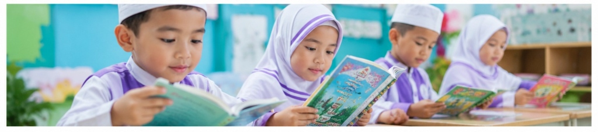
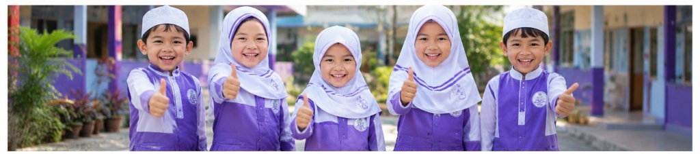
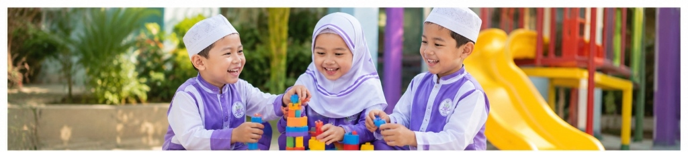

Membina dan mengembangkan pendidikan anak usia dini Islam yang berkualitas dalam lingkungan yang aman, nyaman dan penuh kasih sayang.
Cabang TK Tersebar
Guru Berdedikasi
Siswa Aktif
Tahun Pengalaman


Yayasan Pendidikan Bakti berdedikasi penuh pada penyelenggaraan pendidikan taman kanak-kanak berbasis nilai-nilai Islam. Kami mengintegrasikan kurikulum nasional dengan pendidikan diniyah yang terstruktur.
Kami meyakini bahwa usia dini adalah masa *golden age* di mana pondasi iman, akhlak, dan kecerdasan terbentuk. Oleh karena itu, seluruh lingkungan sekolah di bawah naungan kami dirancang untuk ramah anak, inspiratif, dan religius.
Pelajari Sejarah YayasanPilih cabang terdekat dari rumah Anda. Tersebar di berbagai kecamatan di Kota Surakarta untuk kemudahan akses pendidikan berkualitas.

Jl. Dr. Radjiman No. 123, Bumi, Laweyan
Jl. Monginsidi No. 45, Banjarsari
Jl. Ki Hajar Dewantara No. 12, Jebres
Jl. Kapten Mulyadi No. 88, Pasar Kliwon
Jl. Veteran No. 55, Serengan
Jl. Slamet Riyadi No. 320, Pajang
Jl. Adi Sucipto No. 10, Manahan
Jl. Brigjen Katamso No. 44, Mojosongo

Pembiasaan dan metode menghafal juz 30 yang menyenangkan untuk menumbuhkan cinta Al-Quran sejak kecil.

Penanaman akhlak mulia dan adab sehari-hari terintegrasi dalam setiap kegiatan belajar mengajar dan bermain.

Fasilitas lengkap untuk mengasah kecerdasan logika, seni, serta motorik halus dan kasar anak secara optimal.
Selama bertahun-tahun berkarya, Yayasan Pendidikan Bakti telah menorehkan puluhan prestasi membanggakan baik di tingkat kecamatan maupun kota. Ini adalah bukti nyata dedikasi kami dalam mencetak generasi unggul.
Tingkat TK se-Kota Surakarta (Kategori Putra & Putri)
Tingkat Kecamatan Laweyan & Banjarsari
Dianugerahkan oleh Dinas Pendidikan Kota Surakarta
Festival Seni Anak Sholeh Tingkat Provinsi
Piala Walikota Surakarta
Jangan lewatkan acara dan kegiatan penting yang akan segera diselenggarakan di lingkungan Yayasan Pendidikan Bakti.
Lomba mewarnai khusus anak TK dan pra-sekolah dalam rangka menyambut Hari Kemerdekaan Republik Indonesia.
Seminar untuk orang tua murid bertema "Mendidik Anak Generasi Alpha dengan Akhlakul Karimah".
Field trip ke markas pemadam kebakaran Kota Surakarta untuk pengenalan profesi sejak dini.
Penyerahan laporan perkembangan belajar anak (Rapor Bayangan) tengah semester ganjil kepada orang tua.
Mari bergabung bersama keluarga besar Yayasan Pendidikan Bakti dan berikan pendidikan dasar terbaik yang berlandaskan nilai-nilai Islam untuk putra-putri Anda.
Daftar Sekarang
Dalam rangka menyambut hari jadi, yayasan mengadakan festival kreativitas anak yang akan diikuti oleh 16 cabang TK Islam Bakti.
Baca Selengkapnya
Yayasan Pendidikan Bakti terus meningkatkan kualitas tenaga pengajar melalui seminar rutin bulanan bertema psikologi anak.
Baca Selengkapnya
Program rutin mengajarkan rasa empati dan sedekah pada anak-anak usia dini yang dilaksanakan secara serentak.
Baca Selengkapnya